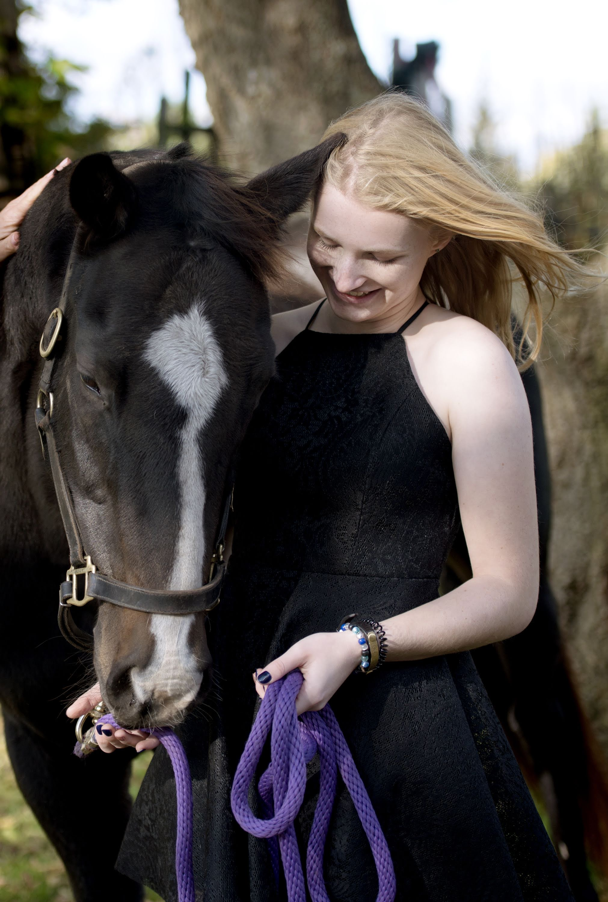
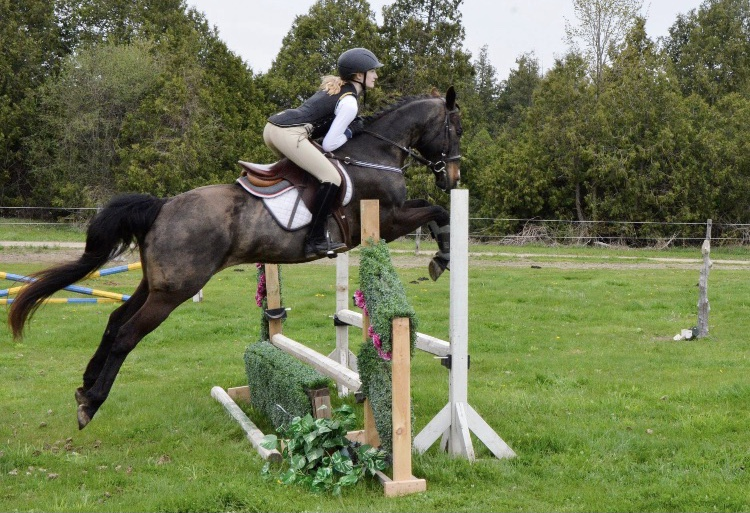

See more information on..
Shiney is a 2005 quarter horse mare. She began her life on the race track known as Shiney Royal Cash, doing the quarter mile, quarter horse racing. In 2010, she finished her career after 26 starts and a total of just over 18,000 dollars in earnings. Shiney went on to her new career as a riding pony, where she began learning how to be ridden. In the beginning of 2020 Shiney showed signs of kissing spine. Whiching is caused by the pinching of the muscles around the spine by two vertebrae. Shiney is expected to make a full recovery from this with rest rehab and a properly fitting saddle. Shiney and I started our journey in 2018 when I had my first lesson on her. She was my coach's pony and not many people were able to ride her as she was a little picky on who was on her back. If Shiney did not like who was riding her she would take matters into her own hands and be difficult and throw the person off. I was so nervous to get on her but once I was it was like none other. She was challenging and never a straight forward ride but three was something about her that made me want to keep trying. On my third ride/ lesson on her I fell off, which scared me but once she realized I was gone she stopped and came back to me. My coach was shocked because usually when someone fell off her she would take off. It was at that moment I knew she was the pony for me and I would do anything in my power to continue to be able to improve to be the rider she needed. Before I knew it I was her only rider and we were improving so quickly and experiencing so many first together and having the most fun doing it all. In the summer of 2019 we had both our first show seasons. We began our season in the lowest level hunters but that was not for us, so by the by the next show we moved up to the 2ft/2ft3 jumpers which was much more our style and that day we came home with two first and a third. We continued our season in these divisions and finished overall third by the end of year banquet. I was so proud of myself and of course my amazing pony. Unfortunately I found myself falling off another horse and concussed and Shiney hurt herself and was lame. So we were both off for a few weeks and then had to rehab back into work together. Before we knew it we were back to it. In the beginning of 2020 we came into a stage where Shiney was becoming a much more unhappy undersaddle, she was bucking and not out of excitement like usual but in pain so we gave her some time off which led us to the pandemic. This led to many changes at the barn and Shiney was moved up north to Orillia. I was gutted, she was my everything and then she was gone. Slowly I moved on but just recently I was intouch angina with my old coach (Shiney’s owner) and we arranged a time for us to make the trip up to see her, so just a few weeks ago I was reunited with my special pony.
 
For more pictures of Shiney check out her instagram Hashtag #ShineyRoyalCash